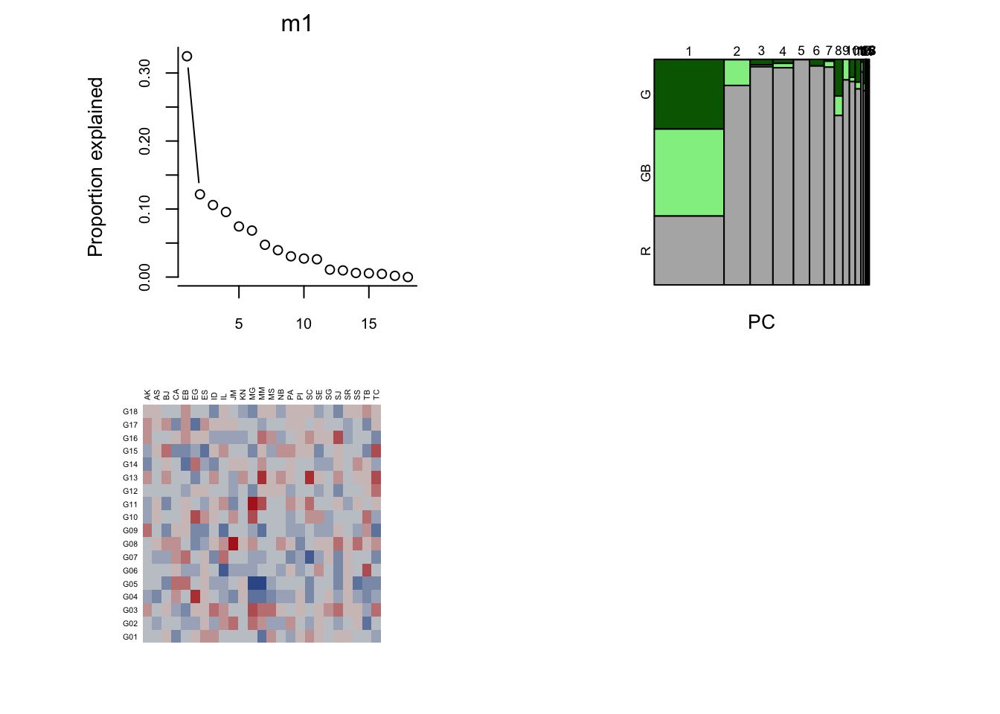
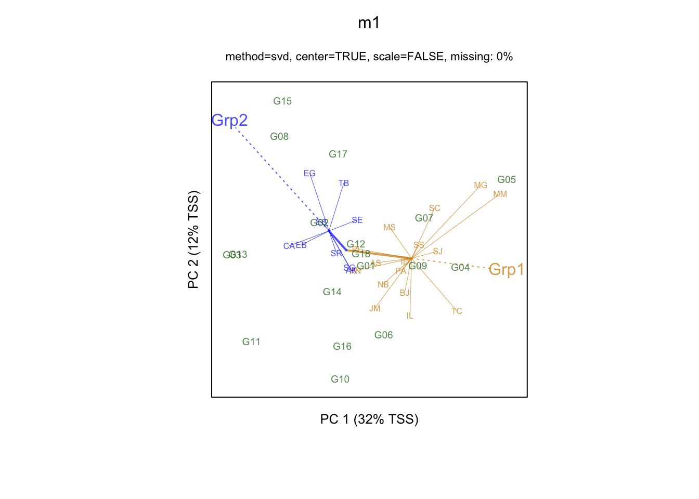

Libraries
library(tidyverse)
library(agricolae)
library(magrittr)
library(scales)
library(gge)library(tidyverse)
library(agricolae)
library(magrittr)
library(scales)
library(gge)The motivation for many plant breeding programs is to identify a particular variety/strain/genotype
There are several names loosely related to genotype in plant breeding:
AMMI stands for Additive Main Effects and Multiplicative Interaction models and have been used to analyze main effects and genotype by environment interactions in multilocation variety trials.
Consider the anova of genotype (G) the environment (E) and their interaction (GE),
\begin{aligned} Y_{ijk} = G_i + E_j + GE_{ij} + \varepsilon_{ijk} \end{aligned}
There are a few downsides to this ANOVA, in that GE is not sufficiently explored. AMMI breaks down the GE interaction into orthogonal components and tests each of the orthogonal components with svd, that is,
\begin{aligned} Y_{ijk} = G_i + E_j + \sum_{n=1}^{h}u_{ni}s_nv_{in} + \varepsilon_{ijk} \end{aligned} where s_n is the n’th singular value, u_{ni} is the nth left singular vector, v_{in} is the n^{th} right singular vector.
The example from the documetation is plrv, which we will use and replicate results for
data(plrv)
head(plrv) Genotype Locality Rep WeightPlant WeightPlot Yield
1 102.18 Ayac 1 0.5100000 5.10 18.88889
2 104.22 Ayac 1 0.3450000 2.76 12.77778
3 121.31 Ayac 1 0.5425000 4.34 20.09259
4 141.28 Ayac 1 0.9888889 8.90 36.62551
5 157.26 Ayac 1 0.6250000 5.00 23.14815
6 163.9 Ayac 1 0.5120000 2.56 18.96296anova with rep nested in location.
# AMMI
plrv <- plrv %>% mutate(Rep = factor(Rep))
mod_ammi <- with(plrv, AMMI(Locality, Genotype, Rep, Yield, console = FALSE))
mod_ammi$ANOVAAnalysis of Variance Table
Response: Y
Df Sum Sq Mean Sq F value Pr(>F)
ENV 5 122284 24456.9 257.0382 9.08e-12 ***
REP(ENV) 12 1142 95.1 2.5694 0.002889 **
GEN 27 17533 649.4 17.5359 < 2.2e-16 ***
ENV:GEN 135 23762 176.0 4.7531 < 2.2e-16 ***
Residuals 324 11998 37.0
---
Signif. codes: 0 '***' 0.001 '**' 0.01 '*' 0.05 '.' 0.1 ' ' 1# The same anova table by lm
# mod_plrv <- lm(Yield~Genotype*Locality + Rep:Locality, data = plrv) # same
mod_plrv <- lm(Yield~Genotype*Locality + Rep %in% Locality, data = plrv)
anova(mod_plrv)Analysis of Variance Table
Response: Yield
Df Sum Sq Mean Sq F value Pr(>F)
Genotype 27 17533 649.4 17.5359 < 2.2e-16 ***
Locality 5 122284 24456.9 660.4343 < 2.2e-16 ***
Genotype:Locality 135 23762 176.0 4.7531 < 2.2e-16 ***
Locality:Rep 12 1142 95.1 2.5694 0.002889 **
Residuals 324 11998 37.0
---
Signif. codes: 0 '***' 0.001 '**' 0.01 '*' 0.05 '.' 0.1 ' ' 1These are residuals from the regression of only gen and env main effects.
# AMMI version
mod_ammi$genXenv %>% head() ENV
GEN Ayac Hyo-02 LM-02 LM-03 SR-02 SR-03
102.18 5.5726162 -12.491822 1.742525 -2.707044 2.9173487 4.9663762
104.22 -2.8712076 7.168410 3.933622 -4.035837 0.4788158 -4.6738028
121.31 0.3255230 -3.866684 4.318281 10.436613 -11.8834384 0.6697043
141.28 -0.9451837 5.645482 -9.780664 14.646310 -4.8033711 -4.7625741
157.26 -10.3149711 -10.624168 4.233636 16.868361 2.7171021 -2.8799609
163.9 3.0874931 -6.941672 3.496379 -12.553327 7.0168816 5.8942454# by hand
mean_plrv <- plrv %>% group_by(Genotype, Locality) %>%
summarize(Yield = mean(Yield), .groups = "drop_last") %>%
add_column(residuals = lm(Yield~Genotype + Locality, data = .)$residuals)
plrv_int <- mean_plrv %>% pivot_wider(id_cols = "Genotype", names_from = "Locality", values_from = "residuals")
plrv_int %>% head()# A tibble: 6 × 7
# Groups: Genotype [6]
Genotype Ayac `Hyo-02` `LM-02` `LM-03` `SR-02` `SR-03`
<fct> <dbl> <dbl> <dbl> <dbl> <dbl> <dbl>
1 102.18 5.57 -12.5 1.74 -2.71 2.92 4.97
2 104.22 -2.87 7.17 3.93 -4.04 0.479 -4.67
3 121.31 0.326 -3.87 4.32 10.4 -11.9 0.670
4 141.28 -0.945 5.65 -9.78 14.6 -4.80 -4.76
5 157.26 -10.3 -10.6 4.23 16.9 2.72 -2.88
6 163.9 3.09 -6.94 3.50 -12.6 7.02 5.89 # AMMI version
mod_ammi$analysis percent acum Df Sum.Sq Mean.Sq F.value Pr.F
PC1 56.3 56.3 31 13368.5954 431.24501 11.65 0.0000
PC2 27.1 83.3 29 6427.5799 221.64069 5.99 0.0000
PC3 9.4 92.7 27 2241.9398 83.03481 2.24 0.0005
PC4 4.3 97.1 25 1027.5785 41.10314 1.11 0.3286
PC5 2.9 100.0 23 696.1012 30.26527 0.82 0.7059# by hand
plrv_mat <- plrv_int %>% data.matrix() %>% `[`(,-1)
s <- svd(plrv_mat)
U <- s$u
L <- s$d
V <- s$v
# sum of squares for each orthogonal component is simply sum(singular values^2). We multiply by 3 because we averaged over 3 reps
SS <- (L^2) * 3
scales::number(SS, big.mark = "", accuracy = .001)[1] "13368.595" "6427.580" "2241.940" "1027.579" "696.101" "0.000" the sum of squares, is because the frobenius norm is invariant to unitary changes, thus, the SVD, U and V matrices don’t affect the norm, and we can just calculate frobenius norm of the singular values. See proof on site facts of unitary invariant norms
# total is the same as SS of the GE in the anova table
SSTotal <- sum(SS, na.rm = TRUE)
percent <- (1/SSTotal) * SS * 100
# percent is just the ratio to total.
scales::number(percent, accuracy = .01)[1] "56.26" "27.05" "9.44" "4.32" "2.93" "0.00" The formula for degrees of freedom is
\begin{aligned} df_n = i + j - 1 - 2m \end{aligned}
where i is number of genotypes, j is number of environments, and m is how many components you choose.
not sure the derivation, but details should be in:
# df in table
28 + 6 - 1 - 2*(1:5)[1] 31 29 27 25 23# mean squares of residual from anova table
SSres <- 37.0 # df = 31
# F = MS / MSres, df from the tables and formulas
1 - pf(431.24501 / 37, 31, 31)[1] 4.109519e-10biplots are just principal components.
GGE stands for “Genotype + Genotype:Environment” biplot analysis. There is additional specification for “block” or grouping structures among different environments (locations or years typically),
We use the crossa wheat example to see how the method works. see ?crossa.wheat for details.
data(crossa.wheat)Warning in data(crossa.wheat): data set 'crossa.wheat' not foundlibrary(agridat)
data(crossa.wheat)
m1 <- gge(crossa.wheat, yield ~ gen*loc , env.group=locgroup, scale=FALSE, ggb = TRUE)
plot(m1)
biplot(m1)
Plot explanations:
We use the plrv example to try and recreate the components of the GGE analysis
m2 <- gge(plrv, formula = Yield~Genotype*Locality, center=TRUE, scale = TRUE)
m2 %>% names() [1] "x" "x.orig" "genCoord" "locCoord" "blockCoord"
[6] "gen.group" "env.group" "ggb" "genMeans" "mosdat"
[11] "R2" "center" "scale" "method" "pctMiss"
[16] "maxPCs" # x.orig is the means grouped by genotype and locality, first dimension is genotype
x.orig <- plrv %>% group_by(Genotype, Locality) %>%
summarize(mean_yield = mean(Yield), .groups = "drop_last") %>%
pivot_wider(id_cols = "Genotype", names_from = "Locality", values_from = "mean_yield") %>%
data.matrix() %>%
`[`(,-1)
# gge$x is center scaled matrix
x <- x.orig %>% scale()# genMeans is just average across all the environments
genMeans <- rowMeans(x, na.rm = TRUE)
# genMeans %*% t(rep(1, ncol(x)))